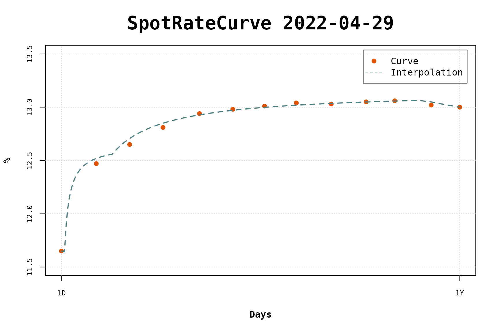

Using FOCUS Expectations with Flat-Forward COPOM Interpolation
copom-focus-scenarios.RmdThe FOCUS report delivers weekly a number of expectations of market variables (indexes and rates). One of these is the SELIC rate, it is informed future values for each one of the future COPOM meetings. These data can be obtained with the rbcb package.
library(tidyverse)
#> ── Attaching packages ─────────────────────────────────────── tidyverse 1.3.2 ──
#> ✔ ggplot2 3.3.6 ✔ purrr 0.3.4
#> ✔ tibble 3.1.7 ✔ dplyr 1.0.9
#> ✔ tidyr 1.2.0 ✔ stringr 1.4.0
#> ✔ readr 2.1.2 ✔ forcats 0.5.1
#> ── Conflicts ────────────────────────────────────────── tidyverse_conflicts() ──
#> ✖ dplyr::filter() masks stats::filter()
#> ✖ dplyr::lag() masks stats::lag()
library(fixedincome)
#>
#> Attaching package: 'fixedincome'
#>
#> The following objects are masked from 'package:dplyr':
#>
#> first, last
refdate <- as.Date("2022-04-29")
df <- rbcb::get_market_expectations("top5s-selic",
start_date = refdate,
end_date = refdate
)
df <- df |>
mutate(
Reuniao_ano = str_split(reuniao, "/", simplify = TRUE)[, 2],
Reuniao_cod = str_split(reuniao, "/", simplify = TRUE)[, 1],
reuniao = str_c(Reuniao_ano, Reuniao_cod)
) |>
arrange(reuniao) |>
filter(tipoCalculo == "C") |>
select(reuniao, mediana)
df
#> # A tibble: 16 × 2
#> reuniao mediana
#> <chr> <dbl>
#> 1 2022R3 12.8
#> 2 2022R4 13.2
#> 3 2022R5 13.2
#> 4 2022R6 13.2
#> 5 2022R7 13.2
#> 6 2022R8 13.2
#> 7 2023R1 13.2
#> 8 2023R2 12.8
#> 9 2023R3 12.2
#> 10 2023R4 11.8
#> 11 2023R5 11
#> 12 2023R6 10.4
#> 13 2023R7 10
#> 14 2023R8 9.62
#> 15 2024R1 9
#> 16 2024R2 8.5
df |>
ggplot(aes(x = reuniao, y = mediana)) +
geom_point() +
geom_text(aes(label = mediana, hjust = 0.5, vjust = -1.0)) +
labs(
x = "Meeting",
y = "SELIC Rate",
title = "SELIC Rates Expectations",
caption = "Source: FOCUS Report"
)
terms <- c(1, 23, 44, 65, 88, 109, 129, 149, 171, 193, 211, 234, 252)
rates <- c(
0.1165, 0.1247, 0.1265, 0.1281, 0.1294, 0.1298, 0.1301, 0.1304,
0.1303, 0.1305, 0.1306, 0.1302, 0.1300
)
curve <- spotratecurve(
rates, terms, "discrete", "business/252", "Brazil/ANBIMA",
refdate = refdate
)
library(copom)
#> Loading required package: bizdays
#>
#> Attaching package: 'bizdays'
#> The following object is masked from 'package:stats':
#>
#> offset
copom_dates <- get_copom_dates(refdate, 8)
fwd <- (df[["mediana"]][1:8] - 0.1) / 100
interpolation(curve) <- interp_copomscenarios(copom_dates, future_rates = fwd)
plot(curve |> fixedincome::first("1 years"), use_interpolation = TRUE)
interp <- interpolation(curve)
interp@copom_moves * 1e4
#> [1] 100 50 0 0 0 0 0 -50
moves <- c(100, 25, 25, 0, 0, 0, 0, 0) / 1e4
interpolation(curve) <- interp_copomscenarios(copom_dates, copom_moves = moves)
plot(curve |> fixedincome::first("1 years"), use_interpolation = TRUE)